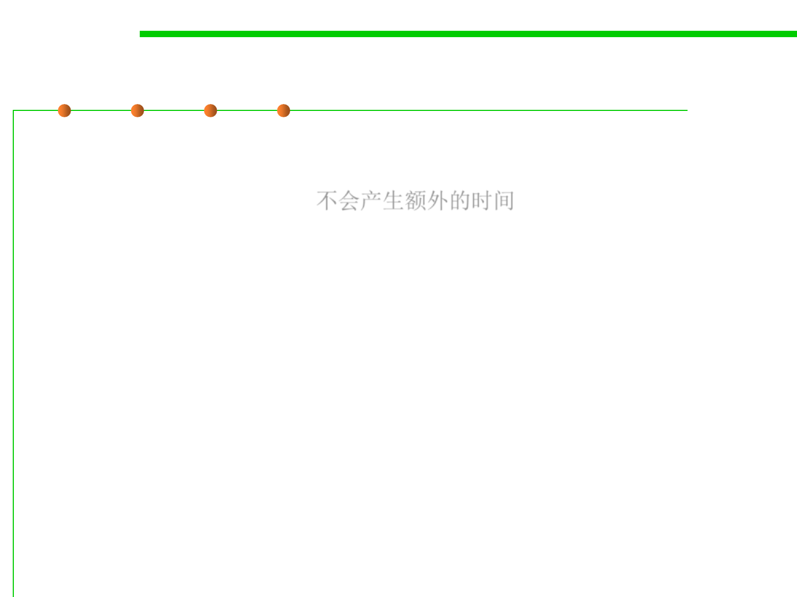

Test First or Test Last?
7.5 Testing and Test-First Programming
▪ Writing test cases before writing the code doesn’t take any more
effort than writing test cases after the code; it simply resequences the
test-case-writing activity. 不会产生额外的时间
▪ If you save your test cases (which you should), you can still test last,
in addition to testing first.